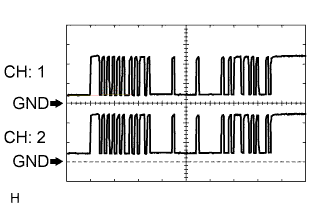
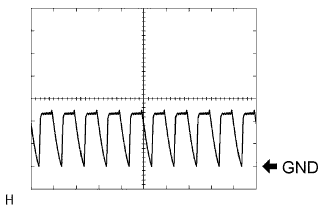
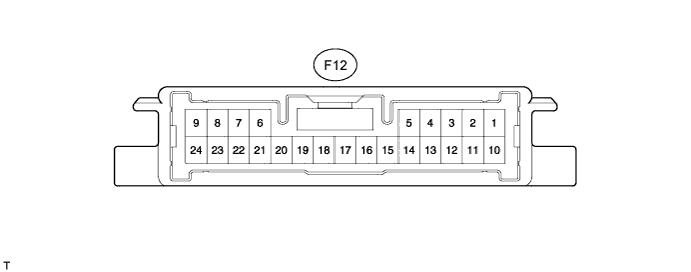

TOYOTA PARKING ASSIST-SENSOR SYSTEM > TERMINALS OF ECU |
| CHECK PARK ASSIST ECU (w/ Parking Assist Monitor System) |

Disconnect the F43 and F44 ECU connectors.
Measure the voltage and resistance according to value(s) in the table below.
| Terminal No. (Symbol) | Wiring Color | Terminal Description | Condition | Specified Condition |
| F43-6 (+B) - F43-4 (GND1) | L - W-B | Power source signal | Always | 11 to 14 V |
| F43-1 (IG) - F43-4 (GND1) | G - W-B | IG power source signal | Engine switch on (IG) | 11 to 14 V |
| F43-1 (IG) - F43-4 (GND1) | G - W-B | IG power source signal | Engine switch off | Below 1 V |
| F43-14 (ACC) - F43-4 (GND1) | GR - W-B | ACC power source signal | Engine switch on (ACC) | 11 to 14 V |
| F43-14 (ACC) - F43-4 (GND1) | GR - W-B | ACC power source signal | Engine switch off | Below 1 V |
| F44-6 (CSSW) - F43-4 (GND1) | Y - W-B | Clearance sonar main switch power source signal | Engine switch on (IG), clearance sonar main switch on | 11 to 14 V |
| F44-6 (CSSW) - F43-4 (GND1) | Y - W-B | Clearance sonar main switch power source signal | Engine switch on (IG), clearance sonar main switch off | Below 1 V |
| F43-4 (GND1) - Body ground | W-B - Body ground | ECU ground | Always | Below 1 Ω |
Reconnect the F43 and F44 ECU connectors.
Measure the voltage and waveform according to value(s) in the table below.
| Terminal No. (Symbol) | Wiring Color | Terminal Description | Condition | Specified Condition |
| F44-28 (BOR) - F44-29 (E2) | R - GR | Rear sensor circuit power source | Engine switch on (IG), clearance sonar main switch on | 7.2 to 8.8 V |
| F44-28 (BOR) - F44-29 (E2) | R - GR | Rear sensor circuit power source | Engine switch off | Below 1 V |
| F44-33 (SOF) - F44-32 (E1) | LG - R | Front sensor circuit power source | Engine switch on (IG), clearance sonar main switch on | Waveform 1 |
| F44-25 (BBZ) - F43-4 (GND1) | G - W-B | No. 1 clearance warning buzzer signal | Engine switch on (IG) | 7.2 to 8.8 V |
| F44-25 (BBZ) - F43-4 (GND1) | G - W-B | No. 1 clearance warning buzzer signal | Engine switch off | Below 1 V |
| F44-9 (EF) - F43-4 (GND1) | L - W-B | No. 1 clearance warning buzzer signal | Buzzer sounding | Waveform 2 |
| F44-31 (BOF) - F44-32 (E1) | GR - R | Front sensor circuit power source | Engine switch off | Below 1 V |
| F44-31 (BOF) - F44-32 (E1) | GR - R | Front sensor circuit power source | Engine switch on (IG), clearance sonar main switch on | 7.2 to 8.8 V |
| F44-30 (SOR) - F44-29 (E2) | LG - GR | Rear sensor circuit power source | Engine switch on (IG), clearance sonar main switch on | Waveform 1 |
 |
Using an oscilloscope, check waveform 1.
| Item | Content |
| Terminal No. (Symbol) |
|
| Tool Setting | 2 V/DIV., 1 msec./DIV. |
| Condition | Engine switch on (IG), clearance sonar main switch on |
 |
Using an oscilloscope, check waveform 2.
| Item | Content |
| Terminal No. (Symbol) | F44-9 (EF) - F43-4 (GND1) |
| Tool Setting | 5 V/DIV., 1 msec./DIV. |
| Condition | Engine switch on (IG), shift lever moved to R |
| CHECK CLEARANCE WARNING ECU (w/o Parking Assist Monitor System) |

Disconnect the F12 ECU connector.
Measure the voltage and resistance according to value(s) in the table below.
| Terminal No. (Symbol) | Wiring Color | Terminal Description | Condition | Specified Condition |
| F12-15 (IG) - F12-17 (GND1) | G - W-B | IG power source signal | Engine switch on (IG) | 11 to 14 V |
| F12-15 (IG) - F12-17 (GND1) | G - W-B | IG power source signal | Engine switch off | Below 1 V |
| F12-12 (CSSW) - F12-17 (GND1) | Y - W-B | Clearance sonar main switch power source signal | Engine switch on (IG), clearance sonar main switch on | 11 to 14 V |
| F12-12 (CSSW) - F12-17 (GND1) | Y - W-B | Clearance sonar main switch power source signal | Engine switch on (IG), clearance sonar main switch off | Below 1 V |
| F12-17 (GND1) - Body ground | W-B - Body ground | ECU ground | Always | Below 1 Ω |
Reconnect the F12 ECU connector.
Measure the voltage and waveform according to value(s) in the table below.
| Terminal No. (Symbol) | Wiring Color | Terminal Description | Condition | Specified Condition |
| F12-10 (BBZ) - F12-11 (EF) | G - L | No. 1 clearance warning buzzer signal | Buzzer not sounding | Below 1 V |
| F12-10 (BBZ) - F12-11 (EF) | G - L | No. 1 clearance warning buzzer signal | Buzzer sounding | Waveform 1 |
| F12-21 (BOF) - F12-19 (E1) | GR - R | No. 1 ultrasonic sensor circuit power source | Engine switch on (IG), clearance sonar main switch on | 7.2 to 8.8 V |
| F12-21 (BOF) - F12-19 (E1) | GR - R | No. 1 ultrasonic sensor circuit power source | Engine switch off | Below 1 V |
| F12-9 (SOF) - F12-19 (E1) | LG - R | No. 1 ultrasonic sensor circuit power source | Engine switch on (IG), clearance sonar main switch on | Waveform 2 |
| F12-7 (BOR) - F12-18 (E2) | R - GR | Rear ultrasonic sensor circuit power source | Engine switch on (IG), clearance sonar main switch on | 7.2 to 8.8 V |
| F12-7 (BOR) - F12-18 (E2) | R - GR | Rear ultrasonic sensor circuit power source | Engine switch off | Below 1 V |
| F12-24 (SOR) - F12-18 (E2) | LG - GR | Rear ultrasonic sensor circuit power source | Engine switch on (IG), clearance sonar main switch on | Waveform 2 |
Using an oscilloscope, check waveform 1.
| Item | Content |
| Terminal No. (Symbol) | F12-10 (BBZ) - F12-11 (EF) |
| Tool Setting | 5 V/DIV., 1 msec./DIV. |
| Condition | Engine switch on (IG), shift lever moved to R |
Using an oscilloscope, check waveform 2.
| Item | Content |
| Terminal No. (Symbol) |
|
| Tool Setting | 2 V/DIV., 1 msec./DIV. |
| Condition | Engine switch on (IG), clearance sonar main switch on |